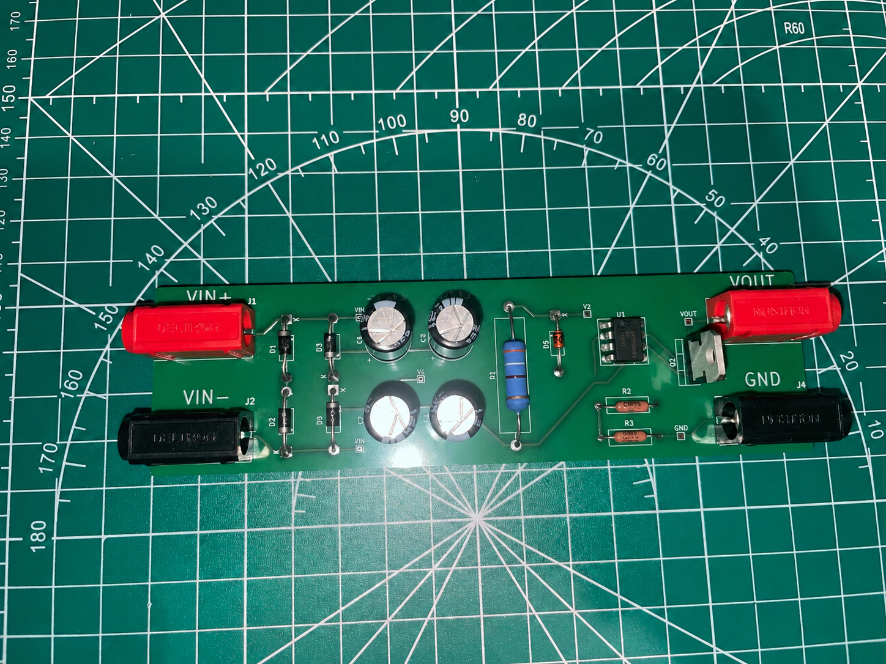

AC-DC Power Supply
AC-DC Power Supply

{kind=link}
This project involved designing, simulating, building, and testing a complete AC–DC power supply circuit. The supply converts stepped-down AC voltage into a regulated DC output using a full-bridge rectifier, capacitor filter, Zener diode voltage reference, op-amp gain stage, and BJT pass transistor. The design process included comparing rectifier topologies, selecting component values, sizing the filter capacitor to limit ripple, and verifying circuit behavior across different input voltages and load currents. A major focus of the project was understanding practical power supply tradeoffs. The full-bridge rectifier was selected over a simpler half-wave rectifier because it uses both halves of the AC waveform, reducing ripple and improving filter performance. The Zener diode provided a stable reference voltage, the op-amp increased the regulated output to approximately 10 V, and the BJT stage improved load current capability. Through LTspice simulation and bench testing, the project reinforced important design considerations such as voltage regulation, ripple reduction, component power ratings, thermal limits, safety, cost, and conversion efficiency.